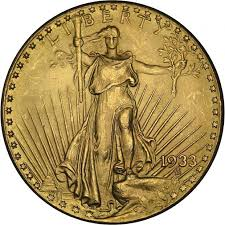

Nossa História
No início da civilização, o comércio era na base do escambo, ou seja, na troca de mercadorias. Só no século VII a.C. que surgiram as primeiras moedas feitas de ouro e prata. A princípio, essas peças eram fabricadas em processos manuais e muito rudimentares, mas já refletiam a mentalidade e cultura do povo da época.

(6,8 milhões de dólares, 16 milhões de reais) Com mais de 600 anos, essa moeda foi cunhada pelo rei Eduardo III e esteve em circulação, na Inglaterra, entre dezembro de 1343 e julho de 1344. Não é à toa que ela é considerada uma das moedas mais raras e valiosas do mundo!